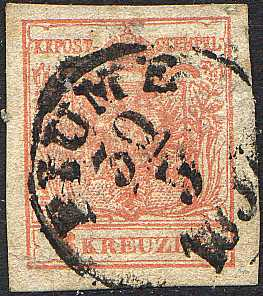
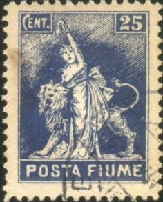
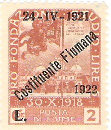

{kind=link}
{kind=link}

Return To Catalogue - Fiume, general issues, part 2 - Fiume, stamps of Hungary overprinted - Italy - Arbe and Veglia - 'FIUME RIJEKA' on Italy, Yugoslavian occupation of Fiume
Note: on my website many of the
pictures can not be seen! They are of course present in the
catalogue;
contact me if you want to purchase the catalogue.

Stamp of Austria, used in Fiume (about 1850)
WARNING: Dangerous forgeries exist of the stamps of Fiume. See for example: http://www.fiume-book.net/eng/FIUME_book/fiume_book.html Stamps of Rijeka, FIUME 1918-1924 by Ivan Martinas.
Woman's head
2 c blue 3 c grey 5 c green (FIUME) 5 c green (POSTA FIUME) City view
10 c red (FIUME) 10 c red (POSTA FIUME) 15 c violet 20 c green Statue of Garibaldi (lion with woman)

25 c blue (FIUME) 40 c brown (FIUME) 40 c brown (POSTA FIUME) 45 c orange (FIUME) 45 c orange (POSTA FIUME) Harbor view
30 c violet (FIUME) 30 c violet (POSTA FIUME) 50 c green (FIUME) 50 c green (POSTA FIUME) 60 c red (FIUME) 60 c red (POSTA FIUME) 1 Cor orange 2 Cor blue 3 Cor red 5 Cor brown 10 Cor green (FIUME) 10 Cor green (POSTA FIUME) Overprinted 'FRANCO' and value

5 on 20 c green 5 on 25 c blue (POSTA FIUME!) 10 on 45 c orange 15 on 30 c violet 15 on 45 c orange 15 on 60 c red 25 on 50 c green (FIUME) 25 on 50 c green (POSTA FIUME) 55 on 1 Cor orange 55 on 2 Cor blue 55 on 3 Cor red 55 on 5 Cor brown 55 on 10 Cor green
The values 1 c, 2 c, 3 c, 4 c, 5 c and 25 c with inscription 'POSTA FIUME' were prepared, but not officially issued.
Forgeries exist, here an imperforate forgery:


Apparently, the forger Imperato (Genoa, Italy) seems to have dealt in forgeries of Fiume (also of some of the next issues). Some of these forgeries are described in 'Focus on Forgeries' by V.E. Tyler.

(Forged stamp of 15 c, the house has four windows, product of
Imperato?)

(Genuine stamps only have three windows in the house)
There exists another forgery of the 20 c green with correct windows.
In forgeries of the woman's head, the star on the forehead is different, the middle leg of the 'E' of 'FIUME' is too short.
Left genuine stamp, right forgery.
Dangerous forgeries of the Harbor View stamps also exist. I don't know how to recognize them. At least two different types of forgeries exist.
Wolf with babies
5 c + 5 L green 10 c + 5 L red 15 c + 5 L grey 20 c + 5 L orange Sailship
45 c + 5 L olive 60 c + 5 L red 80 c + 5 L violet 1 Cor + 5 L grey Flag 2 Cor + 5 L red 3 Cor + 5 L brown 5 Cor + 5 L brown 10 Cor + 5 L violet
Wolf with babies

5 c on 5 c + 5 L green 10 c on 10 c + 5 L red 15 c on 15 c + 5 L grey 20 c on 20 c + 5 L orange Sailship

45 c on 45 c + 5 L olive 60 c on 60 c + 5 L red 80 c on 80 c + 5 L violet 1 Cor on 1 L + 5 L grey Flag

2 Cor on 2 L + 5 L red 3 Cor on 3 Cor + 5 L brown 5 Cor on 5 Cor + 5 L brown 10 Cor on 10 Cor + 5 L violet
Wolf with babies
5 c + 5 L green 10 c + 5 L red 15 c + 5 L grey 20 c + 5 L orange Sailship 45 c + 5 L olive 60 c + 5 L red 80 c + 5 L violet 1 Cor + 5 L grey Flag

2 Cor + 5 L red 3 Cor + 5 L brown 5 Cor + 5 L brown 10 Cor + 5 L violet
Wolf with babies 5 c + 5 L green 10 c + 5 L red 15 c + 5 L grey 20 c + 5 L orange Sailship

45 c + 5 L olive 60 c + 5 L red 80 c + 5 L violet 1 Cor + 5 L grey Flag 2 Cor + 5 L red 3 Cor + 5 L brown 5 Cor + 5 L brown


Fiscal stamp 5 c and 10 C with overprint 'BOLLO' and surcharged
with new value. I've also seen the 10 c stamp without the green
surcharge.

This forged Fournier cancel (second row, first cancel) was most
likely used by the stamp forger Francois Fournier to make
forgeries of Fiume.
Briefmarken - Timbres-Poste - Stamps